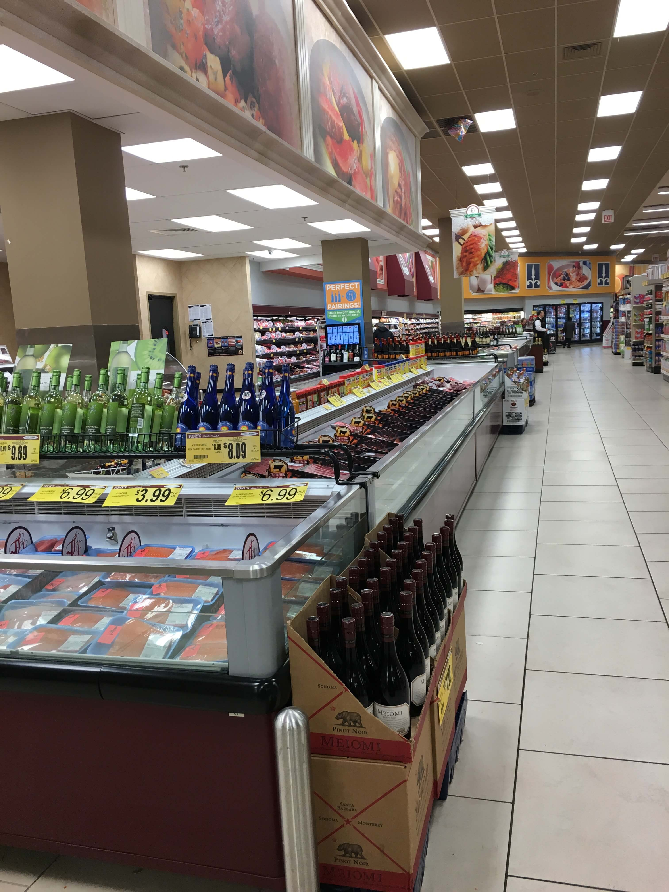
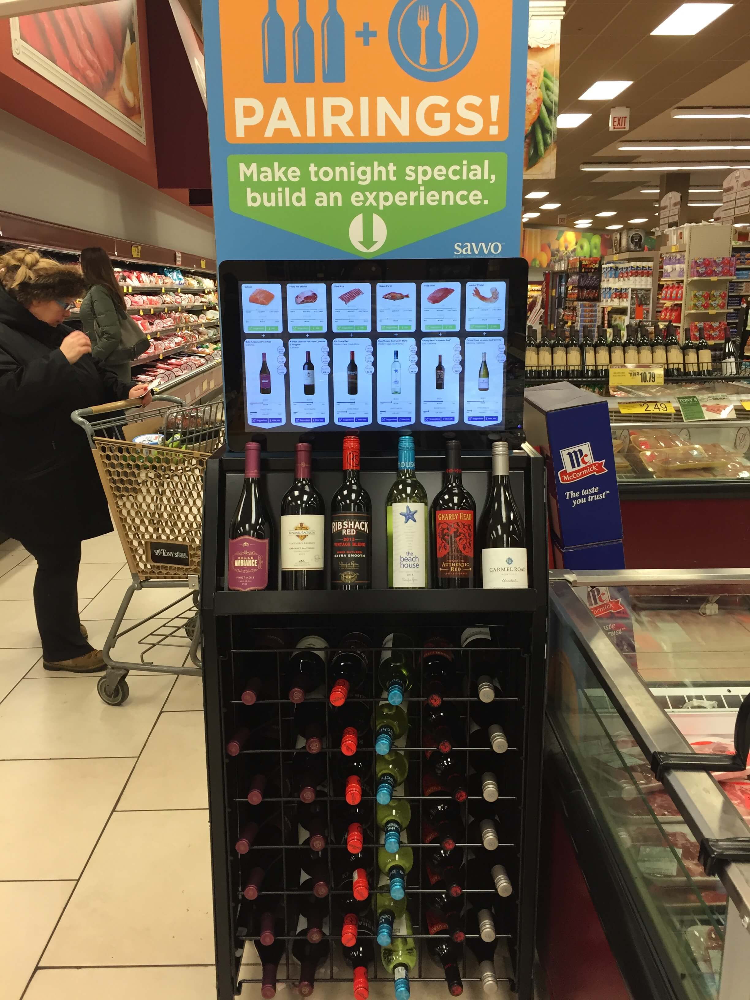
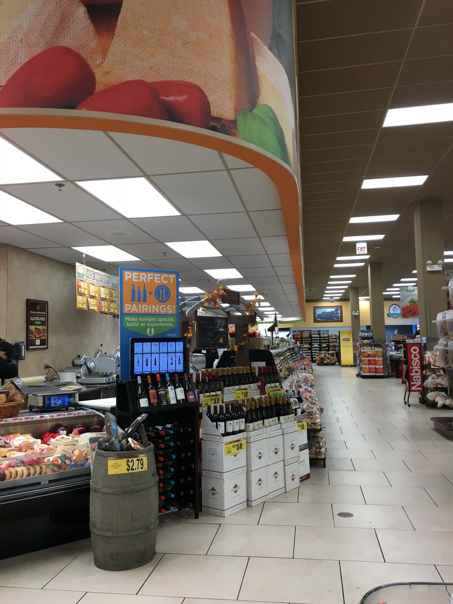
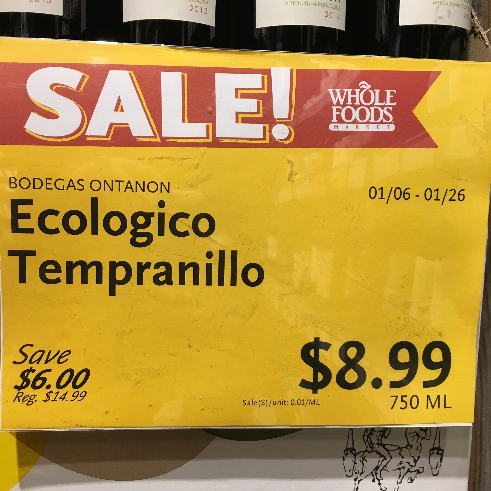
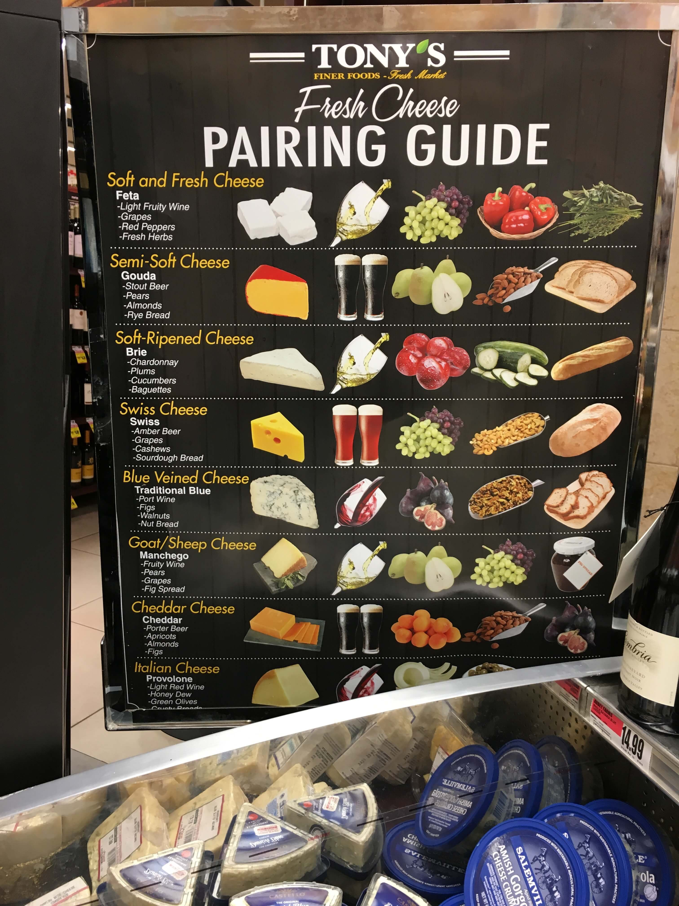
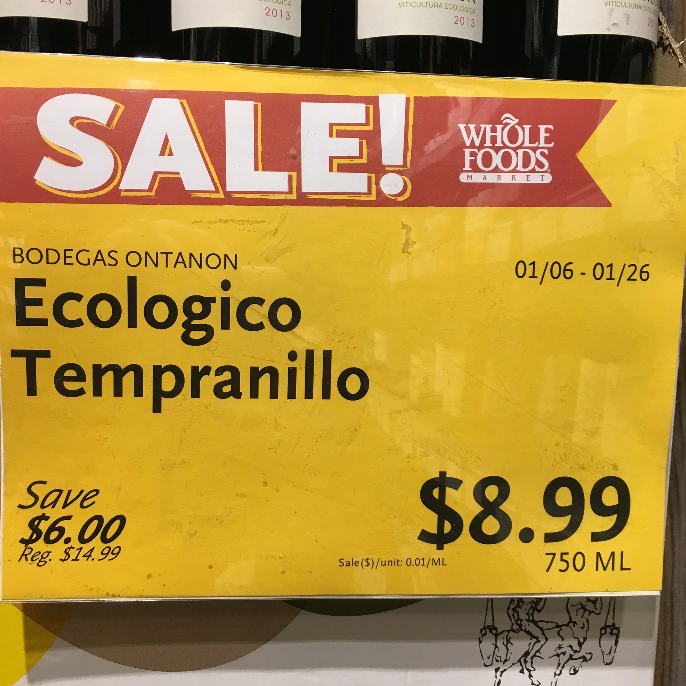
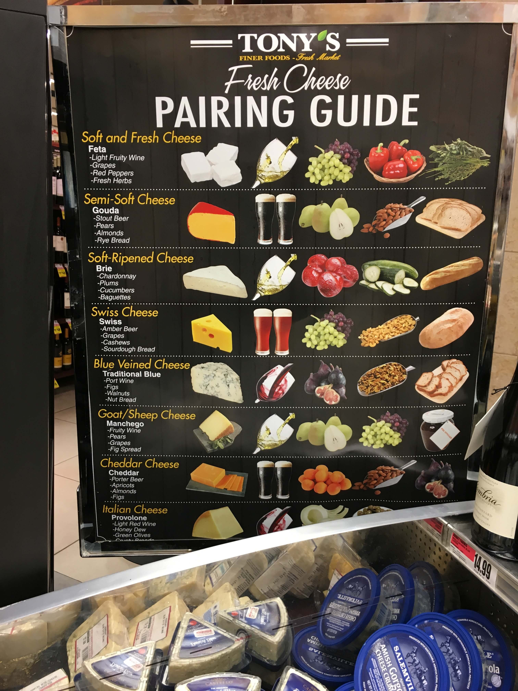
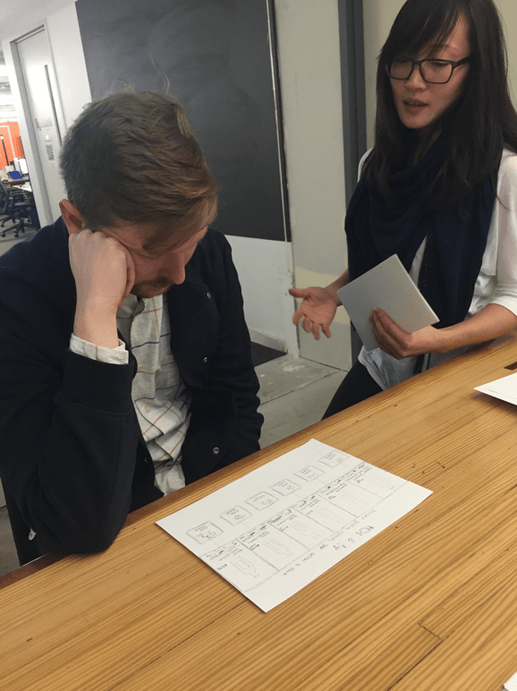

Kiosk Interface Redesign
Role
UX research, service design
Tools
Illustrator, InVision
Deliverables
Competitor analysis, heuristic evaluation, user research, personas, scenarios, wireframe, prototype
Client
Savvo Digital Sommelier Solutions
Background
Savvo is an integrated marketing company with interactive food and wine pairing displays in grocery stores. With low shopper usage, limited data on user engagement, and a business goal to scale into a large regional chain, Savvo sought a kiosk redesign.
Challenge
Working with another UX designer, we had 3 weeks and no financial budget to redesign the kiosk’s 21.5-inch screen interface for an improved user experiences.
Heading 5
Heading 4
Paragraph
Norm Paragraph
Lead Paragraph
Week 1 | Research & Synthesis
With the display being in grocery stores, multiple elements could impact the user’s experience, so we began by taking a holistic approach to understanding the interrelation of physical aspects and user behaviors.
Research Goals
- Understand shopper mental models and point-of-purchase decision-making
- Identify usability issues and gather user insights to redesign the kiosk
We explored Savvo's domain to gain a deeper understanding of the business and wine consumers. I analyzed the current landscape of wine and food pairing in print and digital mediums to understand the standard practices of visual representation and layout architecture.
Understand Savvo using client's shopper survey and brand identity memorandum


Explore domain of wine consumer segments, supermarket wine sales, store kiosks, and wine and food pairing.


With greater knowledge about the consumer segments, wine market, and pairing landscape, we were able to validate our client’s grocery store position and their target market: 80% of wine drinkers.
Domain Insights
- 76% of grocery purchases are unplanned, with “time-stressed” and “explorer” shopper segments most likely to spend on point-of-purchase sales
- Kiosk’s screen angle affords interactivity and is ergonomic for usage while standing
- Wine is generally displayed as full bottles and food is shown as ready-to-eat or in their native, natural form (not raw and un-edible)
We then dug deeper to understand how Savvo added a service to shoppers and then what their users thought. We each performed a heuristic evaluation on the interface’s usability from a design perspective, which helped us to understand the kiosk’s functionality and prepared us for user testing.
Evaluate heuristics of existing interface


Based on the violations we discovered, we assumed that the usability issues were caused by
- information not meeting user expectations
- weak affordances that the kiosk was interactive
- confusion with navigating the available content
Continuing our holistic approach, we set out to learn about users with research methods that allowed us to get the bigger picture view of their natural environment before narrowing in on understanding the details about their behaviors, attitudes, and experiences.
Research users using ethnographic field observation, contextual inquiry, and card sorting methods
  After a cumulative 8 hours over a 3-day period at a Savvo location, we were able to observe the flow of over two dozen shoppers, alternating between different times and days to witness a balanced shopping volume.
Ethnographic Insights
- With the display’s location, foot traffic flowed in a way where shoppers didn’t intuitively look at the screen because it was positioned in a blind spot
- For shoppers who did glance at the screen, it didn’t capture their attention enough to prompt interaction
- The screen had frequent error state popups and one morning, the monitor even timed out because the message wasn’t dismissed
After observing at a distance, we approached shoppers in the store and at a satellite location to prompt and watch 12 users complete tasks with the kiosk. All interview subjects were screened as shoppers who purchase wine at grocery stores and were encouraged to concurrently think aloud as they shared impressions and performed tasks.
Usability Insights
- Users were generally unsure about the kiosk display’s purpose
- The copy wasn’t legible from a distance or at a quick glance, so shoppers didn’t know that they could interact with the screen
- Users were consistently unsure about the active state and misled by the inconsistency of content available for each product
With our assumptions on the usability issues confirmed, we used card sorting with 7 shoppers to understand their language-use and relationship with wine. Our goal was to discover what shoppers valued when making purchase decisions so that we could re-strategize the content to meet those expectations.
Card Sorting Insights
- Wine was usually purchased for: experience, mood, special occasion, or treat-yourself moment
- For wine: price, style and region mattered most
- For additional information: food pairing was the most sought after suggestion
- For purchasing cheese: flavor, texture, and flavor profile mattered most
With a holistic understanding of our product, we moved onto exploring competitors in the same landscape both in the physical and digital space. Our goal was to identify strengths and weakness of product placement methods, visual cues and signage tactics that would inform us about the current best practices before even thinking about ideation.
Analyze competitors in the grocery store landscape
 



Competitive Insights
- Successful pairing involved strategic product placement near complementary items and it enforced the shopper to feel “convinced” rather than “marketed” to
- Wine bottles were displayed upright with the label visible
- Signage described tastes or pairing options in brief and suggestive tones, which sort of entices the shopper to pick up the bottle for more–a small commitment to begin the consumer-product relationship
To bring clarity and focus to our collected data, we each contributed our research insights and then synthesized together by mapping patterns in our findings. I used this moment to review and process everything I had learned in our first week. It helped me solidify the problem we’d solve and identify the users and their scenarios that would be at the center of our decisions going forward.
Sythesize research findings with affinity mapping
Key Research Takeaways
- Kiosk’s interface doesn’t offer much affordance for interaction
- Screen monitor’s positioning on the display affects the functionality and accessibility of it
- From users, we found that it lacked simplicity and learnability:
- Pairing suggestions weren’t clear
- Information takes too long to understand
- The screen doesn’t do what they expect it to do
Problem
Savvo users struggle to understand what the kiosk’s purpose is and what interaction opportunities it provides. We seek a redesign that delivers greater affordance, improved usability, and more useful content.
- Denise is the explorer, she likes to learn about her options and will ask for recommendations at the grocery store during a trip. For her, she would use the kiosk to get recommendations on a meal to make or a wine to pair by exploring a few options.
- Leonard on the other hand, is a time-strapped shopper. He tends to make purchase decisions based on signage and convenience, rather than use grocery lists or plan for meals in advance. For him, he would take the main pairing suggestion that the kiosk shows and opt to spend the least amount of time browsing.
Design Principles
- Helpful
- information included should be useful and assist the user in their shopping and wine-buying needs
- Intuitive
- user should be able to successfully interact with the kiosk without thinking too much
- Discoverable
- user can explore and find opportunities in a simple way to enjoy new experiences
- Imaginative
- user is able to picture themselves in the experience that we’re selling
Week 2 | Ideation
For me, the time after research synthesis and before design ideation is when I re-align business goals with user needs. I’m deliberative with concepting so while I get creative and think big, I also consider practicality and feasibility so that my designs are set up to succeed.
After presenting the key research insights to Savvo, we were able to confirm the functional capabilities of their backend system and collectively set key functionalities for our designs before ideating separately.
Key functionalities
- Pairing suggestions are primary, product information is secondary
- Clear hierarchy of information in navigational flow
- Simplistic functionality to deliver suggestions
- Prioritize content based on user findings
To spark my creativity and get inspiration, I used Pinterest to create a mood board before sketching. Collaging related design work together is how I like to start my ideation process because I can explore and iterate from inspiring examples. As this was my first time designing for a 21.5 inch screen, I made sure to explore kiosk and large touchscreen design patterns too.
What I took from this exercise was seeing the effective use of negative space and grouping to highlight the “pairing” relationship, as well as vivid and bright food imagery to show edible products. I wanted to emulate this clean way of letting a product photo take the most visual weight against a clear background.
When it came to sketching, I started with the safe approach first by making small adjustments to the current kiosk screen and just re-ordering some content. Then, I moved to emulating what I had on my mood board before my mind got inspired and took over to generate its own ideas. We met to exchange feedback on our sketches and then decided on designing out three different concepts to wireframe into a full flow based on the needs of our personas in their scenarios.
Concept validation testing with paper prototypes

I contributed 2 of the 3 designs that we brought in from of 5 users to test.
User Feedback
- The ability to see product options at all times on the dashboard version tested very well
- There was a general preference for having pairing suggestions that included multiple food types
- Users thought the slot machine home screen was fun but it lacked recommendation authority and the pairing felt “random”
Savvo was receptive to our findings and encouraged us to explore the dashboard prototype concept further since it was the most preferred by users and most feasible for their developers to build. We collectively agreed to also incorporate the visual descriptors and the trimmed-down version of the content into building mid-fidelity wireframes of the final prototype.
Week 3 | Iteration & Refinement
In our final week, we focused on refining the dashboard concept. To avoid a “Frankenstein” situation, we collectively sketched the layout of our chosen screens into a flow, and then agreed on a style tile of fonts and colors before designing our mid-fidelity wireframes in Illustrator.
I designed the full and split-view screens, created icons for image placeholders, and compiled all screens for a final review. While my partner compiled the final prototypes, I worked on annotating the wireframes for Savvo.
Outcome
Final Annotated Wireframes

Final Prototypes
Future Considerations
Kiosk physical adjustments
- Adjust screen to a 45º angle for better affordance
- Display bottles in an upright or leaning position to encourage shopper engagement
Usability test an MVP in-store
- Consider potential request for more pairing options by e-mail or text
- Consider adding content that is streamlined and consistent
Next Steps
Our client was impressed with the research insights and redesigned interface. Our work contributed to the company’s decision of halting their growth plans to start off fresh with a complete redesign of both the interface screen and kiosk display using our suggestions. Our wireframes have been passed along to user interface designers as of February 2016 so we’re excited to see the redesigned kiosks deployed in the next few weeks.
Personal Reflection
Going into this project, I was excited to dabble in service design and improve the interaction between grocery shoppers and the kiosk display by taking a holistic approach. I learned how much I enjoy helping to make products more usable and also how I can successfully tackle new domains with the help of design-thinking research. It solidified my transition from being a customer-advocate to a user-centered designer. If I could do anything differently, it would have more access to grocery shoppers at the store and maybe usability “taste” the wine and cheese myself.